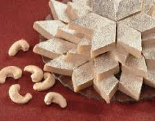
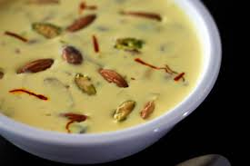

Sweets Recipe
|

Kaju-Katri (Kaju-Barfi) Kaju katli recipe is a popular Indian sweets recipe.
It is a very delicious fudge prepared with sugar and cashews. |
 Coconut Halwa This coconut halwa turns out very soft and yummy and you will love it as much as my family and friends.
It is grated by Coconut Mawa Sugar Cherries Dry fruits Ghee Cardamom Powder Milk. |
Gulab Jambun Gulab jamun, or gulaab jamun, is a milk-solids-based sweet mithai, popular in countries in South Asia, in particular in India, Sri Lanka, Nepal, Pakistan and Bangladesh.
|

Basundi Basundi is an Indian and Pakistani sweet dish made with dahi, flour, and a combination of bajre ki roti. It is usually eaten at lunch.
|
Moong-Dal-Sheera Halva is any of various dense, sweet confections served across the Middle East, South Asia.
|
Jalebi Jalebi, also known as Zulbia, is a sweet popular in countries of South Asia, West Asia, North...
There are several 13th century recipes of the sweet. |